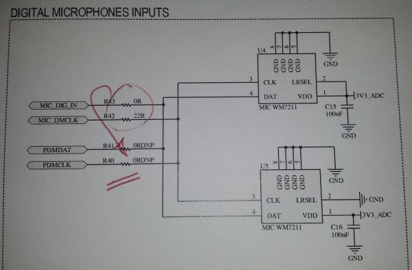

How to use record audio stream with PDMIC
Introduction
The Pulse Density Modulation Interface Controller (PDMIC) is a mono PDM interface controller and decoder that can be connected to a silicon digital microphone. With the Linux PDMIC driver you can easily record sound from this simple connection setup. This ALSA System on Chip (ASoC) layer driver embeds a digitallly controlled gain, a High-Pass and a SINCC filter. The usual ALSA capture interface can be used to interface with this driver. Thearecord application is the reference implementation for such an API.
Identify the driver for PDMIC
During the boot, identify the call to the PDMIC driver probe function:atmel-pdmic f8018000.pdmic: atmel-pdmic-hifi <-> f8018000.pdmic mapping ok [..] ALSA device list: #0: classd @ SAMA5D2-Xplained #1: PDMIC @ sama5d2_xplainedYou can also list them with:
root@sama5d2-xplained:~# cat /proc/asound/cards
0 [SAMA5D2Xplained]: classd___SAMA5D - classd @ SAMA5D2-Xplained
classd @ SAMA5D2-Xplained
1 [sama5d2xplained]: PDMIC___sama5d2 - PDMIC @ sama5d2_xplained
PDMIC @ sama5d2_xplained
root@sama5d2-xplained:~# cat /proc/asound/pcm
00-00: CLASSD PCM atmel-classd-hifi-0 : : playback 1
01-00: PDMIC PCM atmel-pdmic-hifi-0 : : capture 1
root@sama5d2-xplained:~# cat /proc/asound/devices
0: [ 0] : control
16: [ 0- 0]: digital audio playback
32: [ 1] : control
33: : timer
56: [ 1- 0]: digital audio capture
arecord can also list devices on which it can operate:
root@sama5d2-xplained:~# arecord --list-devices **** List of CAPTURE Hardware Devices **** card 1: sama5d2xplained [PDMIC @ sama5d2_xplained], device 0: PDMIC PCM atmel-pdmic-hifi-0 [] Subdevices: 1/1 Subdevice #0: subdevice #0It tels explicitly that the Card 1, device 0 is the capture interface.
This information gives us the device name: hw:1,0
Adjust capture volume
When these are 2 ALSA cards such as on the SAMA5D2 Xplained, you need to select the proper interface for configuring it. You can usealsamixer and change the card selection afterwards (F6 key). or directly use this command line:
alsamixer -c 1Then you can move to the
Capture screen using the TAB key and be able to adjust the capture volume.
Hardware setup
Connecting a silicon digital microphone is very simple with the PDMIC interface. Only a data and a clock lines must be connected to the PDMIC entries. You can take the example schematics below or the on simple connection guidelines in the datasheet of the silicon digital microphone. Record sound
Select the proper ALSA interface according to the chapter above: #Identify_the_driver_for_PDMIC. So you can record a mono sound in thep48000.wav file during 10 seconds with the command:
arecord -D hw:1,0 -d 10 -f S16_LE -c1 -r48000 p48000.wav
| WebFaqBaseForm | |
|---|---|
| Boards | Sama5d2Xplained |
| Components | Kernel, linux-4.1-at91, linux-4.4-at91, linux-4.9-at91, linux-4.14-at91, linux-4.19-at91 |
| Summary | Using the PDMIC to record audio stream |


| I | Attachment | Action | Size | Date | Who | Comment |
|---|---|---|---|---|---|---|
| |
20160108_152413_bis.jpg | manage | 46.5 K | 2016-04-27 - 13:01 | NicolasFerre |
r6 - 05 Jul 2019 - 06:43:20 - EugenHristev

{kind=link}
{kind=link}
Copyright © by the contributing authors. All material on this collaboration platform is the property of the contributing authors.
Linux® is the registered trademark of Linus Torvalds in the U.S. and other countries.
Microchip® and others, are registered trademarks or trademarks of Microchip Technology Inc. and its subsidiaries. 
Arm® and others are registered trademarks or trademarks of Arm Limited (or its affiliates). Other terms and product names may be trademarks of others.
Ideas, requests, contributions ? Connect to LinksToCommunities page.